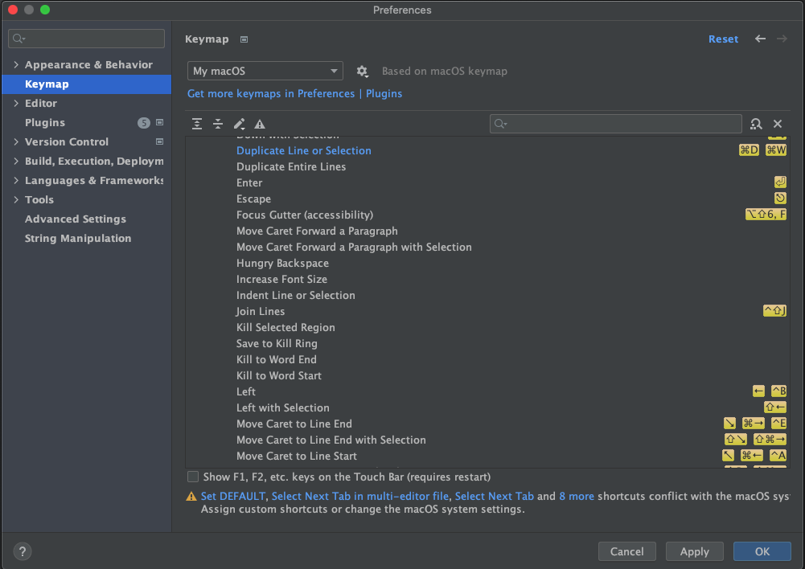

Installing Intellij from Jetbrains Toolbox

brew cask install "jetbrains-toolbox"

<TOMCAT_DIR>/bin/catalina.sh jpda start





https://github.com/holatuwol/liferay-intellij
Script that generates all the IML files, library descriptors, and the modules.xml file needed to have a complete Liferay project that successfully resolves imports in JSPs and Java files across the 1000+ modules in Liferay.
git clone git@github.com:holatuwol/liferay-intellij.git
Add function to .bashrc or functions.zsh
ij() {
<IJ_CLONE_PATH>/intellij "$@"
}
Change directory to liferay-portal
cd <path-to-liferay-portal>
To generate the IntelliJ project after ant all
ij
To generate IML files for a new module you add later on
ij <path_to_new_module>